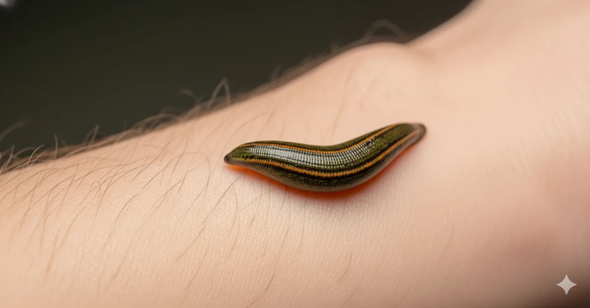

Canlı Verbana Sülük Satışı & Türkiye Kargo
Kocaeli, Gebze ve Darıca için elden hızlı teslimat, tüm Türkiye'ye garantili kargo. Güçlü tutunma refleksli %100 yerli canlı Verbana sülükler ve avantajlı paket seçenekleri.
Verbana Sülük Çeşitlerimiz
Kullanım amacınıza göre özenle seçilmiş %100 yerli canlı Verbana sülükler. Tek tıkla sepetinize ekleyebilir veya ücretsiz kargolu avantajlı paketlerimizden sipariş verebilirsiniz.

Botoks Boy
Yüz, alın ve hassas bölgeler için iz bırakmayan en küçük boy tıbbi sülük.
Orta Boy
Ağrı, dolaşım, boyun/bel fıtığı ve genel vücut tedavilerinde en çok tercih edilen boy.
Büyük Boy
Varis, diz kireçlenmesi ve derin doku tedavilerinde yüksek emiş kapasiteli büyük boy.
Avantajlı Hazır Verbana Şifa Paketleri
En çok tercih edilen kombinasyonları sizin için paketledik. Tek tıkla sipariş verin, ücretsiz canlı garantili kargo fırsatından yararlanın.
- 32 Adet Orta Boy Verbana Sülük
- Rutin Hacamat & Genel Şifa İçin İdeal
- Türkiye Geneli Ücretsiz Kargo
- %100 Canlı Teslimat Garantisi
- 20 Orta Boy + 10 Büyük Boy Verbana Sülük
- Varis, Eklem ve Genel Tedavi Kombini
- Türkiye Geneli Ücretsiz Kargo
- %100 Canlı Teslimat Garantisi
- 20 Orta Boy + 15 Botoks Boy Verbana Sülük
- Yüz/Cilt Bakımı & Hacamat Tedavisi
- Türkiye Geneli Ücretsiz Kargo
- %100 Canlı Teslimat Garantisi
Klinik & Hacamat Merkezlerine Özel Toptan Verbana Tedariği
75, 100 ve 250 adet üzeri toptan Verbana siparişlerinizde özel iskonto, düzenli haftalık gönderim ve termal ambalaj desteği sunuyoruz.
Neden Verbana Türü Sülük?
Önceden piyasada yaygın olan medicinalis türünün yerini, günümüzde hem Türkiye'de hem de dünyada kliniklerin ve deneyimli uygulayıcıların birinci tercihi olan Verbana sülükler almıştır. Türkiye'deki hekimlerin ve hacamat uzmanlarının özellikle Verbana aramasının önemli nedenleri vardır:
Güçlü Isırma Refleksi & Hızlı Tutunma
Uygulama esnasında dakikalarca bekleme yapmaz; canlı ve istekli yapısıyla hızla hedeflenen akupunktur/tedavi noktasına tutunarak seansı hızlandırır.
Yüksek Enzim ve Biyoaktif Zenginlik
Salgısında hirudin, kalin ve destabilaz başta olmak üzere 100'ü aşkın biyoaktif enzim barındırır. Kan dolaşımını rahatlatmada ve doku arınmasında en yüksek verimi sağlar.
Kargo Yolculuğuna Üstün Dayanıklılık
Türkiye coğrafyasına ve su şartlarına en uyumlu yerli türdür. Isı değişimlerine karşı medicinalis türüne göre çok daha dirençlidir; 81 ile yapılan kargo gönderimlerinde zindeliğini korur.

Hangi Hastalıkta Hangi Sülük Kullanılır?
Varis Tedavisinde Sülük Nasıl Uygulanır?
Bacaklardaki toplardamar genişlemesi, venöz yetmezlik ve ağırlık hissine karşı büyük boy sülük kullanımı.
Hacamat ve Sülük Birlikte Nasıl Uygulanır?
Geleneksel tıbbın iki köklü yönteminin doğru seans sırası, aralıkları ve sülük boyu tavsiyeleri.

Diz Kireçlenmesi & Menisküste Sülük
Diz eklem sıvısı azalması, kıkırdak hasarları ve menisküs ağrılarında sülük salgısındaki doğal iltihap kurutucu etki.
Müşterilerimiz Ne Diyor?
Kocaeli, Gebze, Darıca ve İstanbul'dan yüzlerce memnun danışanımız.
"Gebze'ye aynı gün içerisinde teslim ettiler. Sülükler çok hareketli ve canlıydı, paketleme de çok özenliydi. Bakım konusunda da telefonda çok yardımcı oldular."
"Kozmetik boy sülük aldım, yüz uygulaması için. Boyutları tam istediğim gibiydi ve hiç fire vermeden ulaştı. İlginiz ve dürüst esnaflığınız için teşekkürler."
"Hacamat ve sülük uygulamaları için toptan 100 adet sipariş verdik. Hem fiyatları piyasaya göre çok makul hem de kalitesi mükemmel. Düzenli alım yapıyoruz."
Sıkça Sorulan Sorular
Kocaeli ve Gebze tıbbi sülük satışı, teslimat ve bakım hakkında tüm detaylar.
Kocaeli & Çevresi Hizmet Bölgelerimiz
Darıca merkezimizden tüm çevre ilçelere canlı ve sağlıklı tıbbi sülük tedariği sağlıyoruz.
Nenehatun merkezimizden bizzat görerek elden canlı teslim alma imkânı. Haftanın 7 günü 08:00 - 22:00.
Gebze merkez ve tüm mahallelere hızlı teslimat veya Darıca'dan hemen elden teslim alma. Hacamatçılara toptan fiyat.
Çayırova ve Şekerpınar bölgesine dinlendirilmiş saf gölet sülükleri. Toptan ve perakende sipariş.
İzmit merkez, Körfez ve Derince için özel strafor kaplarda %100 canlı ulaşım garantili teslimat.
Tuzla ve Pendik'ten E-5 / Marmaray ile 10-15 dakikada yerimize ulaşıp elden seçerek teslim alabilirsiniz.
Türkiye Geneli Canlı Kargo Ulaşımı
Sadece Marmara bölgesi değil; Türkiye'nin 81 iline özel nem dengeli termal strafor kutularda canlı garantili sülük gönderimi sağlıyoruz.
İstanbul (Tüm İlçeler)
Anadolu Yakası elden/kurye imkanı, tüm ilçelere 1 iş gününde canlı kargo.
Ankara & İç Anadolu
Ankara, Konya, Eskişehir ve çevre illere 1-2 iş gününde garantili teslimat.
İzmir & Ege Bölgesi
İzmir, Manisa, Aydın, Denizli ve tüm Ege illerine özel straforlu gönderim.
Bursa & Güney Marmara
Bursa, Balıkesir, Yalova ve Çanakkale illerine ertesi gün kapıda teslim.
Antalya & Akdeniz
Antalya, Adana, Mersin, Hatay ve Akdeniz illerine canlı garantili sevkiyat.
Karadeniz Bölgesi
Samsun, Trabzon, Ordu, Rize ve tüm Karadeniz illerine hızlı kargo.
Güneydoğu & Doğu Anadolu
Gaziantep, Diyarbakır, Şanlıurfa, Erzurum ve tüm illere güvenli kargo.
81 İl Canlı Garantisi
Kargo kaynaklı zayiat durumunda aynı gün ücretsiz telafi garantisi.